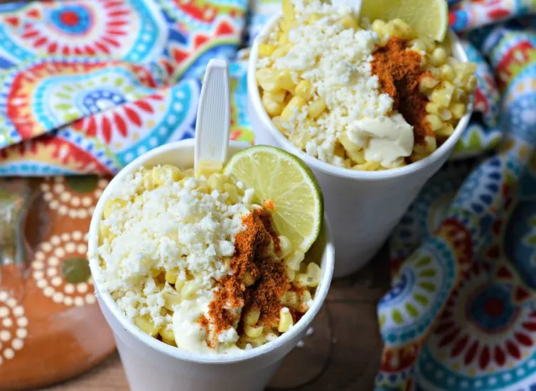

Esquites Recipe

Description
Esquites are one of the most popular street foods in mexico. They are delicious and almost always present at getherings with friends.
Equites are similar to another popular Central American dish - the elote. The main difference between elote and esquite is that esquites are eaten out of a cup, while elote is eaten off the cob.
What are Esquites?
Esquites are a popular Mexican street dish that uses corn kernels as the main ingredient. Additional ingredients include mayonesa, lime, cotija cheese, and chili powder (or tajin).
Ingredients
- 6 cups of White Corn Kernels
- 1/2 white onion
- 3 cloves garlic
- 3 tbsp butter
- Salt
- Epazote
- 5 cups of water
- 1/2 cup cotija cheese
- 1/2 cup Mexican crema
- 1/2 cup mayonnaise
- Lime juice
- Hot sauce, chile powder, or Tajin
Steps
- Add the butter, onion, and garlic to a frying pan and cook until the onion is translucent
- Add the corn kernels and cook for 5 minutes over medium heat
- Add the water, epazote, and the salt and let boil for 20 minutes
- Add the corn to a cup and smother in cotija cheese, Mexican crema, and chile powder
- Squeeze a lime over the esquite
- Serve with a Jarrito of your choosing
- Enjoy!